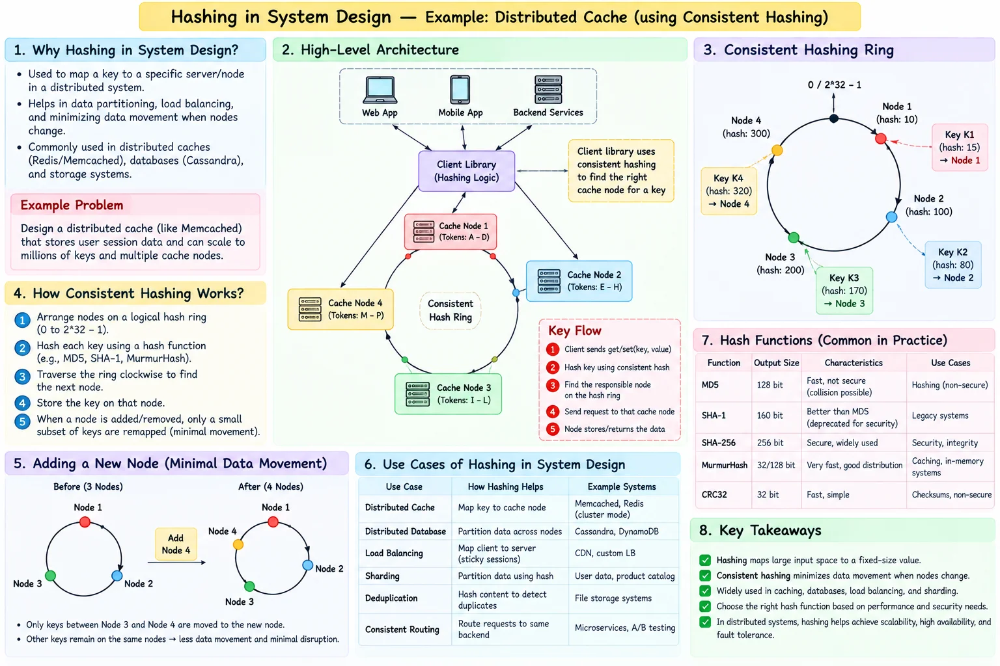

Topic · System Design Fundamentals
Consistent Hashing
Place nodes and keys on one ring so adding or removing a node moves only nearby keys - the routing core of a distributed cache.
Distributed cache design


Quick Revision
- Nodes and keys share one logical ring; a key belongs to the first node clockwise.
- Adding/removing a node affects only nearby ranges - minimal key movement vs
hash % N. - Virtual nodes spread ranges evenly and can reflect unequal server capacity.
- Replication is still required for availability.
- Virtual nodes do not fix a single hot key.
Design checklist
- Requirements - node churn, replication factor, consistency, memory, throughput, multi-region.
- Estimation - total hot data, per-node memory/QPS, virtual-node count, replication overhead.
- High-level design - client/router → ring lookup → owner node + replicas → DB/origin fallback.
- Deep dives - ring membership, stale routing views, rebalancing, replication, quorum, hot keys, recovery after node loss.
Trade-offs
| Choice | Benefit | Cost / risk |
|---|---|---|
| Consistent hashing + virtual nodes | Minimal remapping, better distribution | Ring metadata, rebalancing, hot-key complexity |
Failure modes
- Nodes disagree about the ring - versioned membership, atomic config rollout, reject stale ring versions.
- Cache node fails - replicas, ring remapping, controlled origin fallback, gradual warming.
- One hot key overloads a node - replicate or split/salt the key, L1 cache, adaptive routing.
Interview practice
Answer aloud, then reveal.
Atlassian: a Google Doc is permanently assigned to one server by round robin. What's wrong?
No deterministic ownership after failures or scaling - state gets stranded or misrouted. Use a partition map or consistent hashing, plus replication, leases, and fencing.
Frequent: design a distributed cache like Redis or Memcached.
Clarify item size, read/write mix, freshness, durability. Consistent hashing + virtual nodes, replication, cache-aside, TTL, eviction, failure fallback, hotspot protection.